Exploring plotting options in `SpatialPhyloPlot`
Source:vignettes/exploring_plotting_options_in_SpatialPhyloPlot.Rmd
exploring_plotting_options_in_SpatialPhyloPlot.RmdDate compiled: 11 August, 2025.
Introduction
The purpose of this vignette is to show users how to plot an customise the plotting of phylogenetic trees on top of Visium spatial transcriptomics data.
Please note, the trees produced by SpatialPhyloPlot are
intended to show the spatial relationship between clones. Thus, the
length of the segments in the tree does not represent
genetic distance.
Installation
if (!require("devtools", quietly = TRUE))
install.packages("devtools")
devtools::install_github("Wedge-lab/SpatialPhyloPlot", dependencies = TRUE)Inputs
SpatialPhyloPlot has 6 essential inputs:
-
visium_version:V1orV2 -
newick_file: Path to the.newphylogenetic tree -
image_file: Path totissue_hires_image.png -
tissue_positions_file: Path totissue_positions_list.csv -
scale_factors: Path toscalefactors_json.json -
clone_df: A data frame linking Visium barcodes to phylogenetic tree clones
For the first part of this vignette we’ll be using the Visium 10X data is the Human Brain Cancer 11 mm Capture Area (FFPE) data set provided by 10X Genomics as our Visium data set, with a dummy tree and some dummy clones for the purposes of illustration.
newick_file <- system.file("extdata", "demo.new", package = "SpatialPhyloPlot")
image_file <- system.file("extdata", "tissue_hires_image.png", package = "SpatialPhyloPlot")
tissue_positions_file <- system.file("extdata", "tissue_positions.csv", package = "SpatialPhyloPlot")
scale_factors_file <- system.file("extdata", "scalefactors_json.json", package = "SpatialPhyloPlot")
clone_df <- readRDS(system.file("extdata", "clone_df.rds", package = "SpatialPhyloPlot"))Basic plot features
Visium spots
By default, SpatialPhyloPlot plots each Visium spot as a
point with an opacity of 0.8, as plot_points = TRUE and
point_alpha = 0.8 by default.
SpatialPhyloPlot(visium_version = "V2",
newick_file = newick_file,
image_file = image_file,
scale_factors = scale_factors_file,
tissue_positions_file = tissue_positions_file,
clone_df = clone_df,
clone_group_column = "group")Users can choose to modify the plotting or opacity of points by modifying these two parameters:
SpatialPhyloPlot(visium_version = "V2",
newick_file = newick_file,
image_file = image_file,
scale_factors = scale_factors_file,
tissue_positions_file = tissue_positions_file,
clone_df = clone_df,
clone_group_column = "group",
plot_points = FALSE)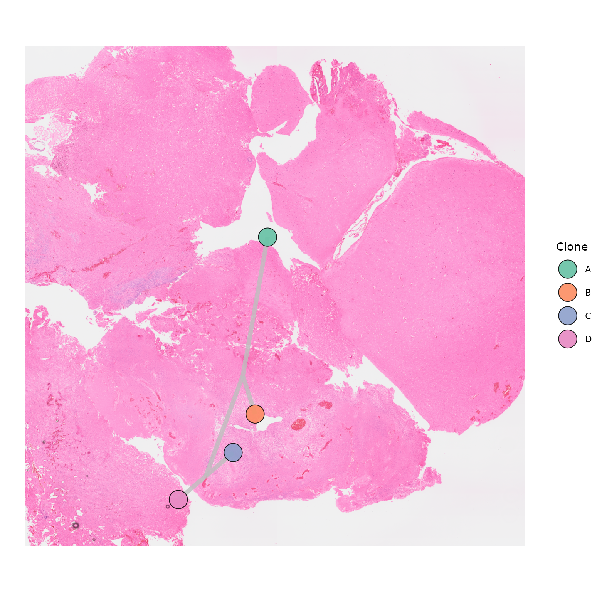
SpatialPhyloPlot(visium_version = "V2",
newick_file = newick_file,
image_file = image_file,
scale_factors = scale_factors_file,
tissue_positions_file = tissue_positions_file,
clone_df = clone_df,
clone_group_column = "group",
point_alpha = 0.2)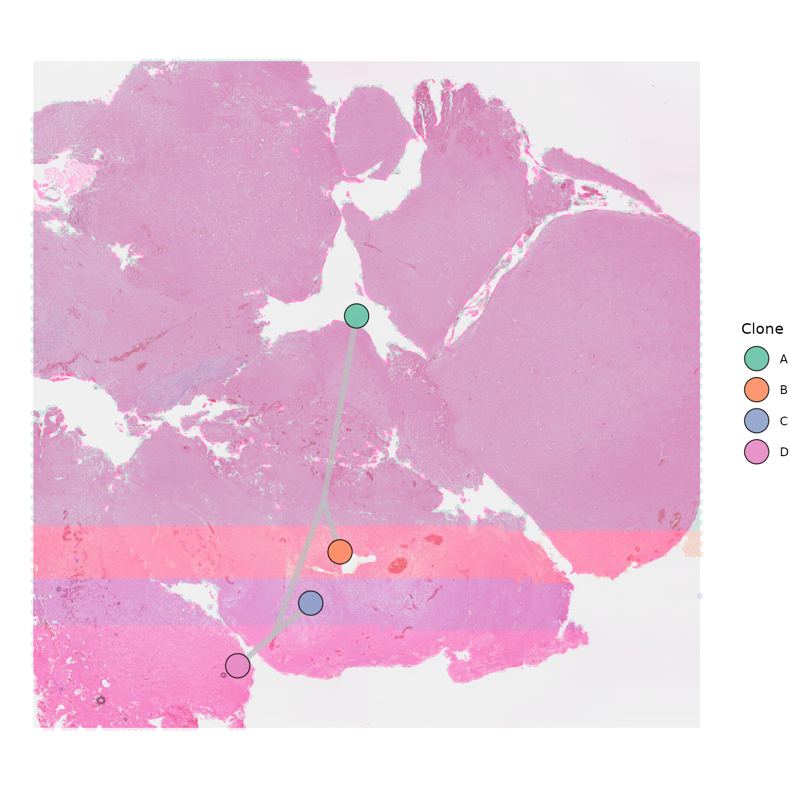
Centroids
By default, SpatialPhyloPlot plots a central point, or
centroid, for each of the clones, the location of which is calculated as
the average of the x and y coordinates of the spots making up that
clones. These centroids are plotted with a default opacity of 0.9 and a
point size of 8, as centroid_alpha = 0.9 and
centroid_size = 8 by default. If you do not wish to plot
centroids the easiest way to do this is by setting the
centroid_alpha = 0.
SpatialPhyloPlot(visium_version = "V2",
newick_file = newick_file,
image_file = image_file,
scale_factors = scale_factors_file,
tissue_positions_file = tissue_positions_file,
clone_df = clone_df,
clone_group_column = "group",
centroid_alpha = 0)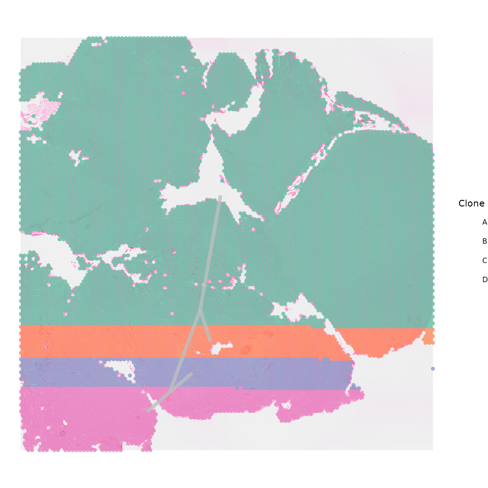
Similarly, centroid size can be modulated by changing
centroid_size:
SpatialPhyloPlot(visium_version = "V2",
newick_file = newick_file,
image_file = image_file,
scale_factors = scale_factors_file,
tissue_positions_file = tissue_positions_file,
clone_df = clone_df,
clone_group_column = "group",
centroid_size = 16)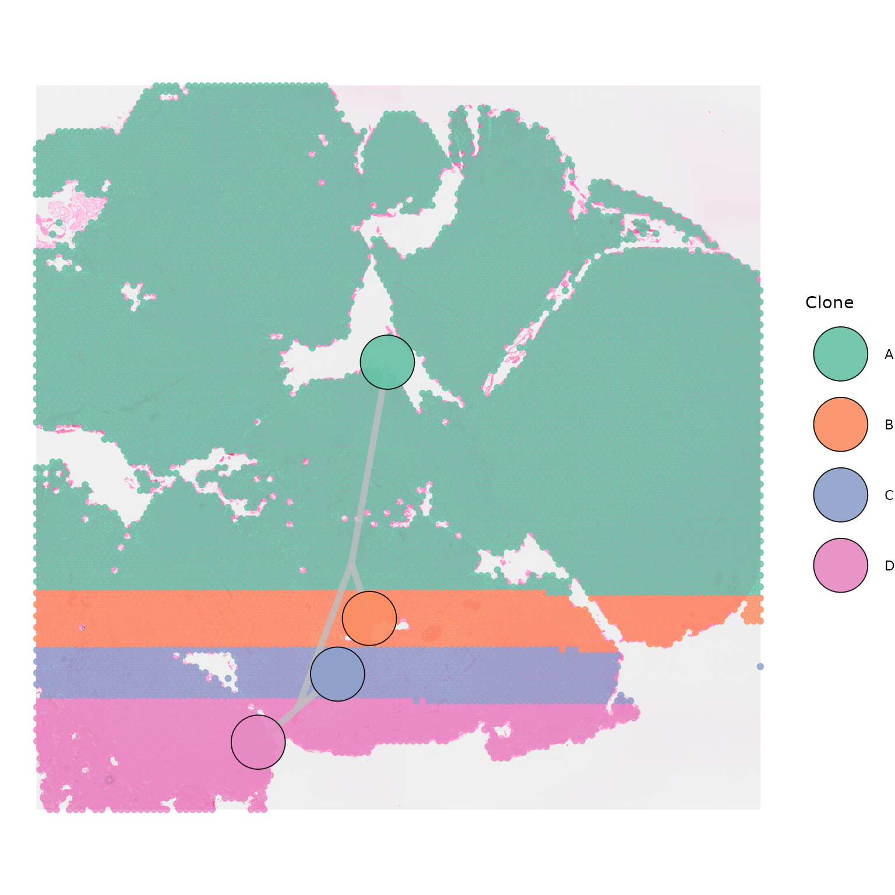
Polygons
Polygons can be plotted around each clone by setting
plot_polygon = TRUE.
SpatialPhyloPlot(visium_version = "V2",
newick_file = newick_file,
image_file = image_file,
scale_factors = scale_factors_file,
tissue_positions_file = tissue_positions_file,
clone_df = clone_df,
clone_group_column = "group",
plot_polygon = TRUE)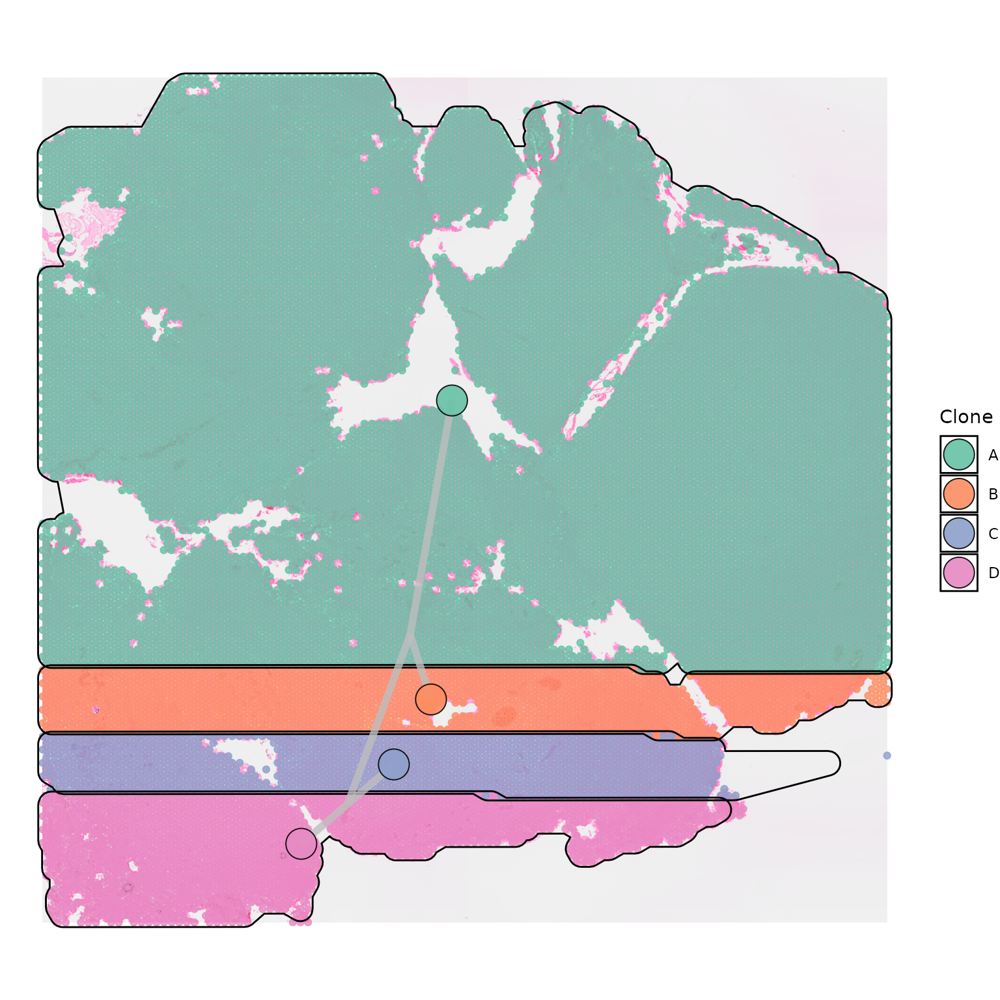
In order for your polygon to be shaded, you will need to change the
hull_alpha parameter, which is set to 0 by default:
SpatialPhyloPlot(visium_version = "V2",
newick_file = newick_file,
image_file = image_file,
scale_factors = scale_factors_file,
tissue_positions_file = tissue_positions_file,
clone_df = clone_df,
clone_group_column = "group",
plot_polygon = TRUE,
hull_alpha = 0.5)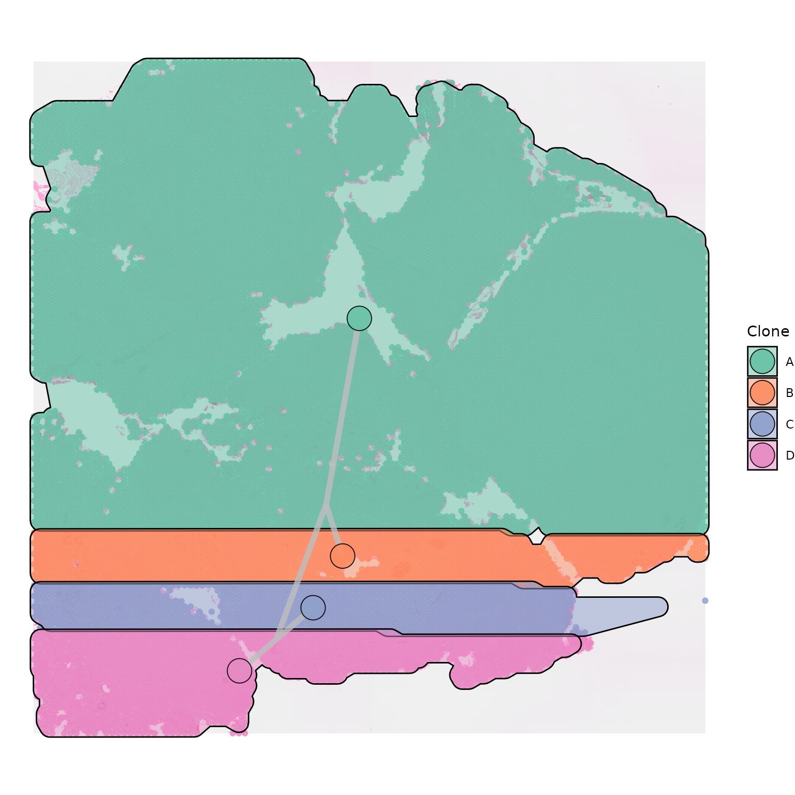
Depending on the nature of your data, you may also want to modulate
the hull_expansion parameter, to customise how tightly your
polygon or hull fits to your points. The default value is 0.005.
SpatialPhyloPlot(visium_version = "V2",
newick_file = newick_file,
image_file = image_file,
scale_factors = scale_factors_file,
tissue_positions_file = tissue_positions_file,
clone_df = clone_df,
clone_group_column = "group",
plot_polygon = TRUE,
hull_alpha = 0.5,
hull_expansion = 0.02)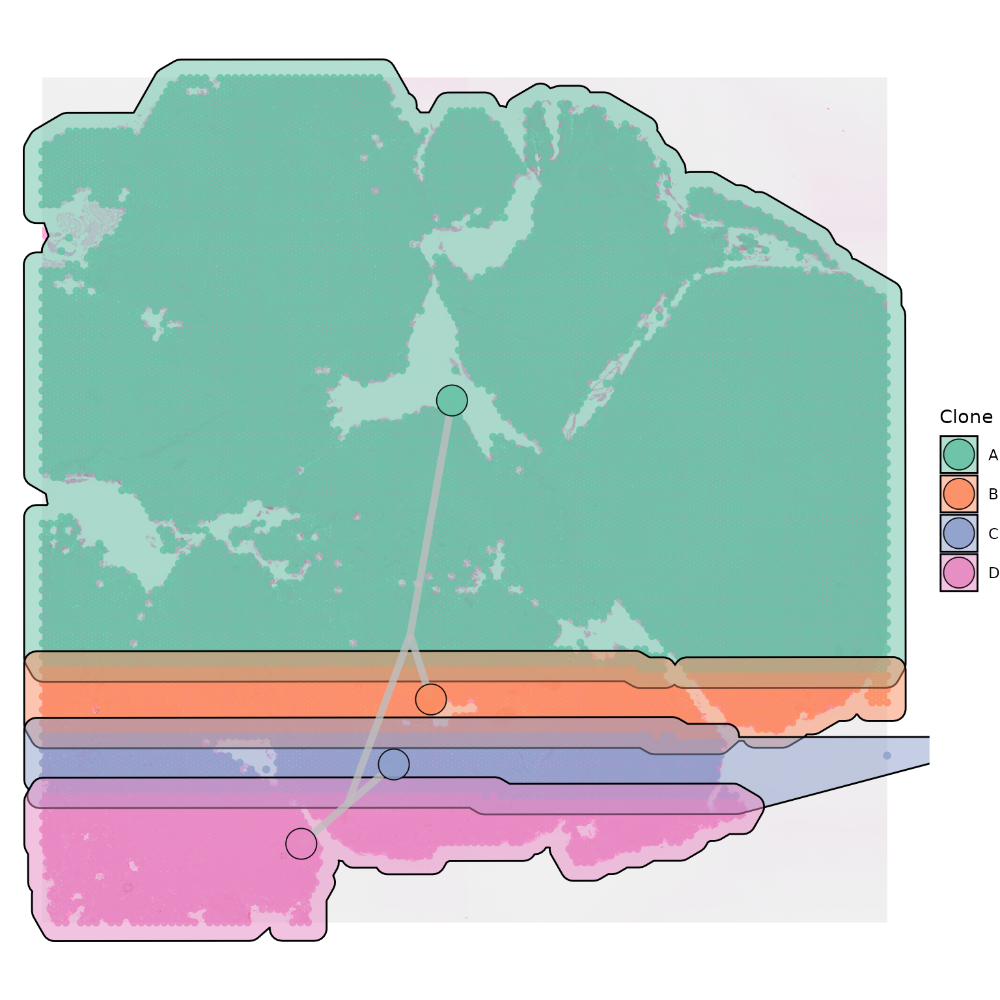
Plotting polygons without the Visium spots can be a great, minimal, way of presenting the data in a way that allows the underlying histology to be visualised as well:
SpatialPhyloPlot(visium_version = "V2",
newick_file = newick_file,
image_file = image_file,
scale_factors = scale_factors_file,
tissue_positions_file = tissue_positions_file,
clone_df = clone_df,
clone_group_column = "group",
plot_polygon = TRUE,
plot_points = FALSE,
hull_alpha = 0.5)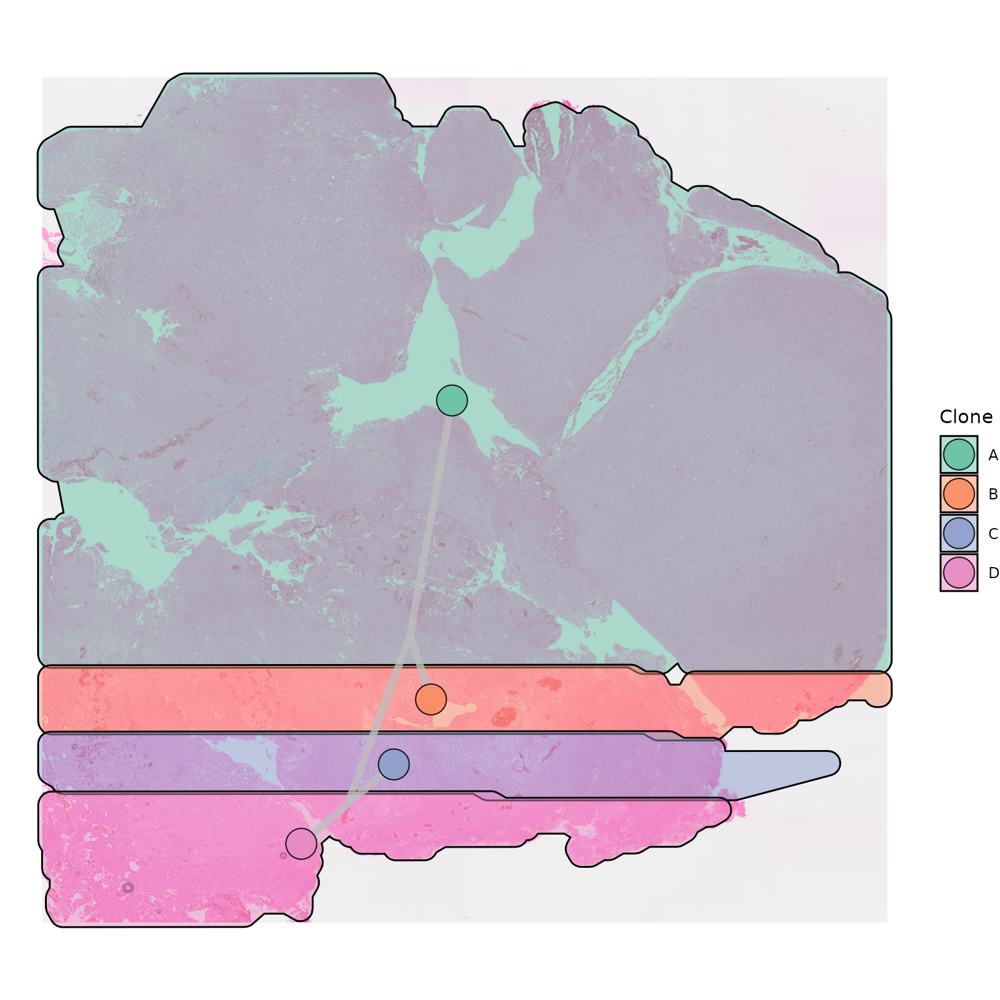
Note, plotting polygons (and centroids and trees) on top of your data may not look as nice if your clones are very intermixed, rather than spatially distinct:
clone_df_mixed <- clone_df
clone_df_mixed$group <- sample(c("A","B","C","D"), 10878, replace = TRUE)
SpatialPhyloPlot(visium_version = "V2",
newick_file = newick_file,
image_file = image_file,
scale_factors = scale_factors_file,
tissue_positions_file = tissue_positions_file,
clone_df = clone_df_mixed,
clone_group_column = "group",
plot_polygon = TRUE,
hull_alpha = 0.3)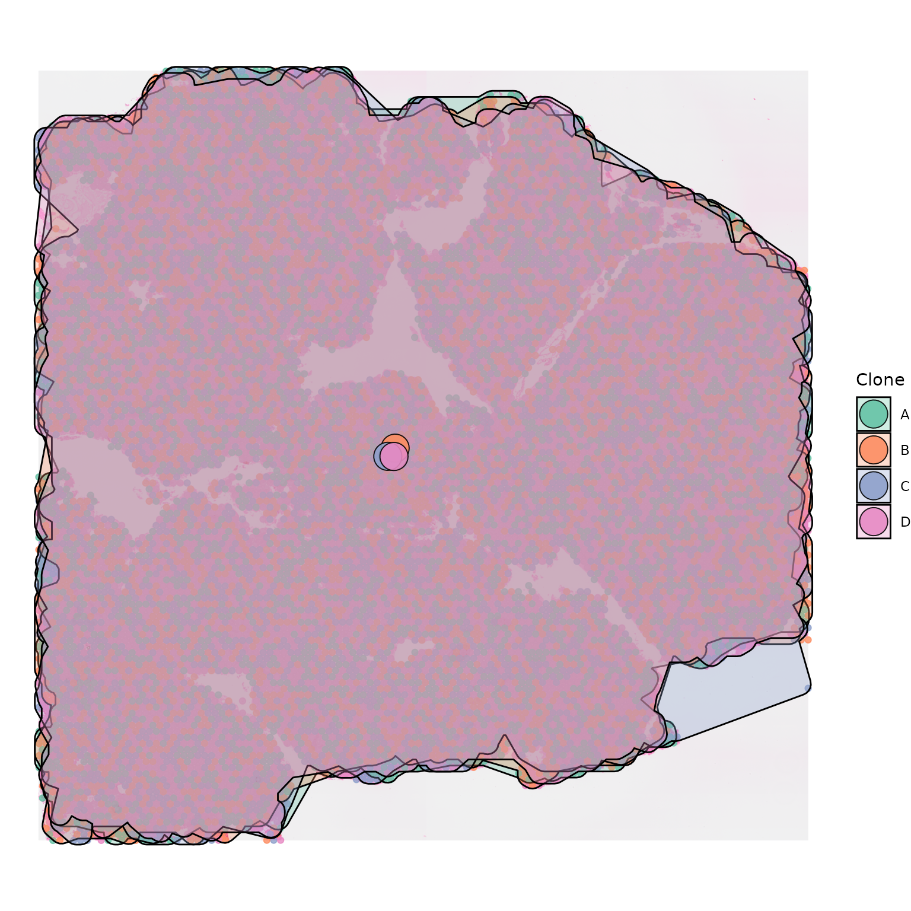
Modifying appearance of points
The appearance of the points representing Visium spots can be
modified using the point_size and point_shape
parameters.
SpatialPhyloPlot(visium_version = "V2",
newick_file = newick_file,
image_file = image_file,
scale_factors = scale_factors_file,
tissue_positions_file = tissue_positions_file,
clone_df = clone_df,
clone_group_column = "group",
point_size = 1)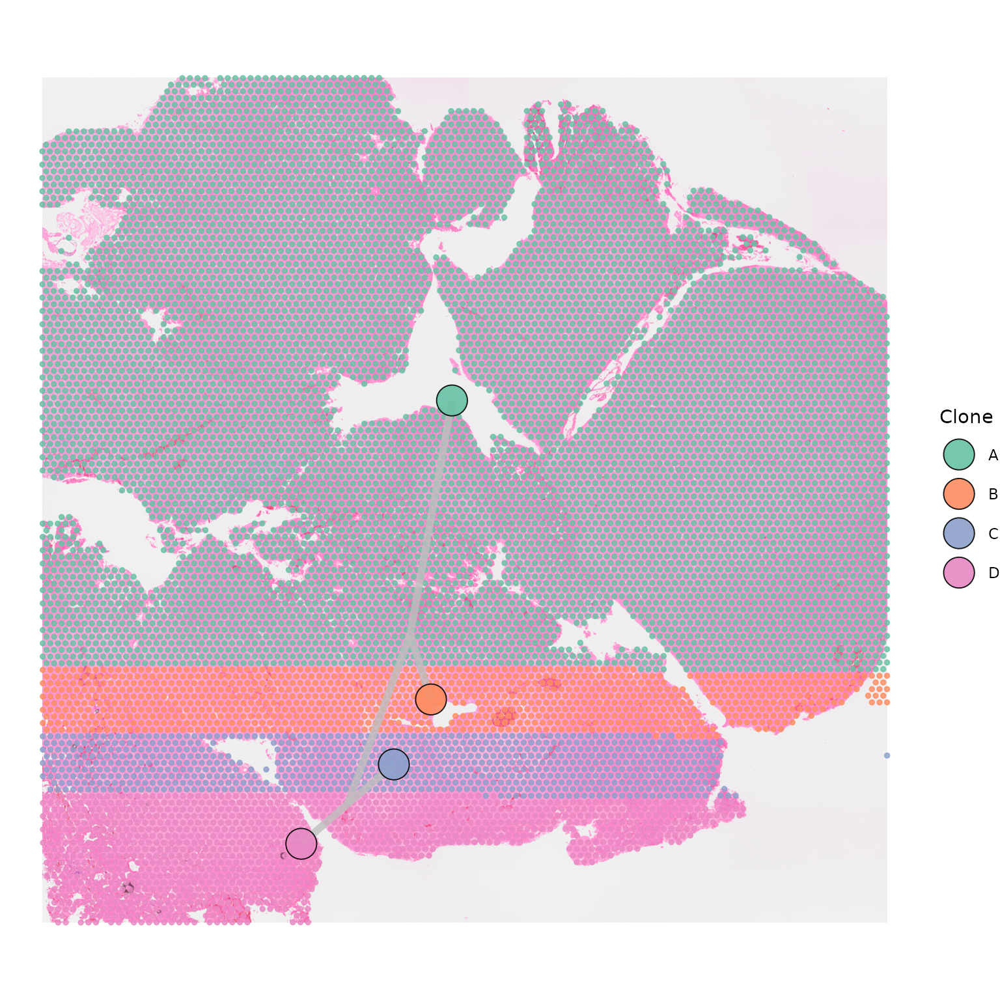
SpatialPhyloPlot(visium_version = "V2",
newick_file = newick_file,
image_file = image_file,
scale_factors = scale_factors_file,
tissue_positions_file = tissue_positions_file,
clone_df = clone_df,
clone_group_column = "group",
point_shape = 18)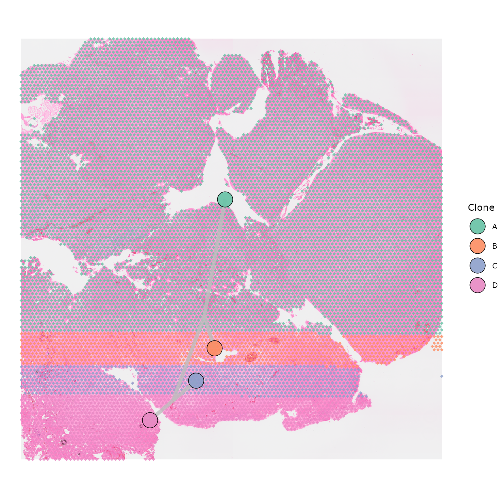
Modifying colours
Point, node, and polygon colours
If you wish to use specific colours to represent your clones, you can
do so by passing a list of colours named after your clones to the
palette parameter.
my_clone_colours <- list("A" = "#183667",
"B" = "#ddebee",
"C" = "#b8badd",
"D" = "#B9D8DC")
my_clone_colours
#> $A
#> [1] "#183667"
#>
#> $B
#> [1] "#ddebee"
#>
#> $C
#> [1] "#b8badd"
#>
#> $D
#> [1] "#B9D8DC"
SpatialPhyloPlot(visium_version = "V2",
newick_file = newick_file,
image_file = image_file,
scale_factors = scale_factors_file,
tissue_positions_file = tissue_positions_file,
clone_df = clone_df,
clone_group_column = "group",
palette = my_clone_colours)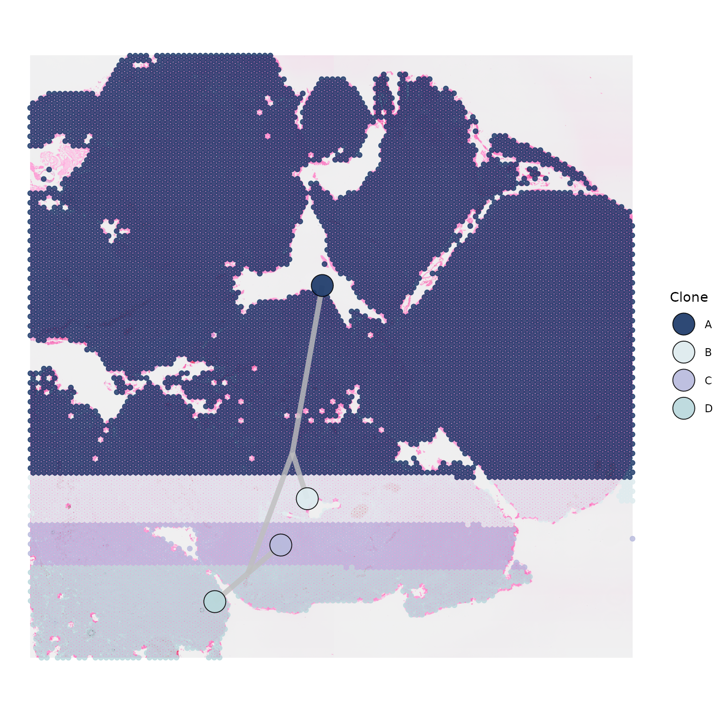
Modifying segments
Colour
The colour of the segments joining the centroids can be changed using
the segment_colour option. The default is
"grey".
SpatialPhyloPlot(visium_version = "V2",
newick_file = newick_file,
image_file = image_file,
scale_factors = scale_factors_file,
tissue_positions_file = tissue_positions_file,
clone_df = clone_df,
clone_group_column = "group",
segment_colour = "black")We can also adjust the width and the opacity of the joining segments
by using segment_width and segment_alpha.
SpatialPhyloPlot(visium_version = "V2",
newick_file = newick_file,
image_file = image_file,
scale_factors = scale_factors_file,
tissue_positions_file = tissue_positions_file,
clone_df = clone_df,
clone_group_column = "group",
segment_colour = "black",
segment_width = 6,
segment_alpha = 0.4)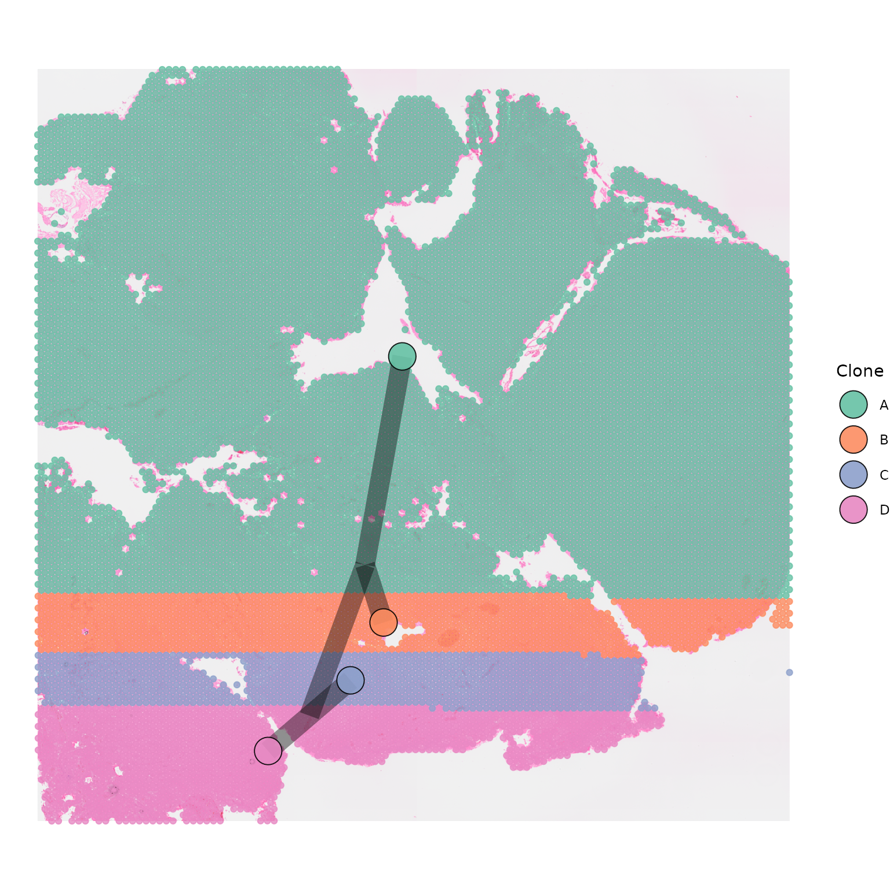
Plotting internal nodes
Phylogenetic trees often have internal nodes, that are not
represented by any of the clones in the tissue. If you would like to
plot internal nodes in the tree as separate nodes, this can be done by
setting plot_internal_nodes = TRUE. This is particularly
useful when segments linking clones are close to each other or
overlapping. The position of internal nodes is calculated as the average
x and y position of all nodes connecting to it.
SpatialPhyloPlot(visium_version = "V2",
newick_file = newick_file,
image_file = image_file,
scale_factors = scale_factors_file,
tissue_positions_file = tissue_positions_file,
clone_df = clone_df,
clone_group_column = "group",
plot_internal_nodes = TRUE)
The appearance of internal nodes can be adjusted by chaning the
internal_node_colour, internal_node_size, and
internal_node_alpha parameters.
SpatialPhyloPlot(visium_version = "V2",
newick_file = newick_file,
image_file = image_file,
scale_factors = scale_factors_file,
tissue_positions_file = tissue_positions_file,
clone_df = clone_df,
clone_group_column = "group",
plot_internal_nodes = TRUE,
internal_node_colour = "red",
internal_node_size = 5,
internal_node_alpha = 1)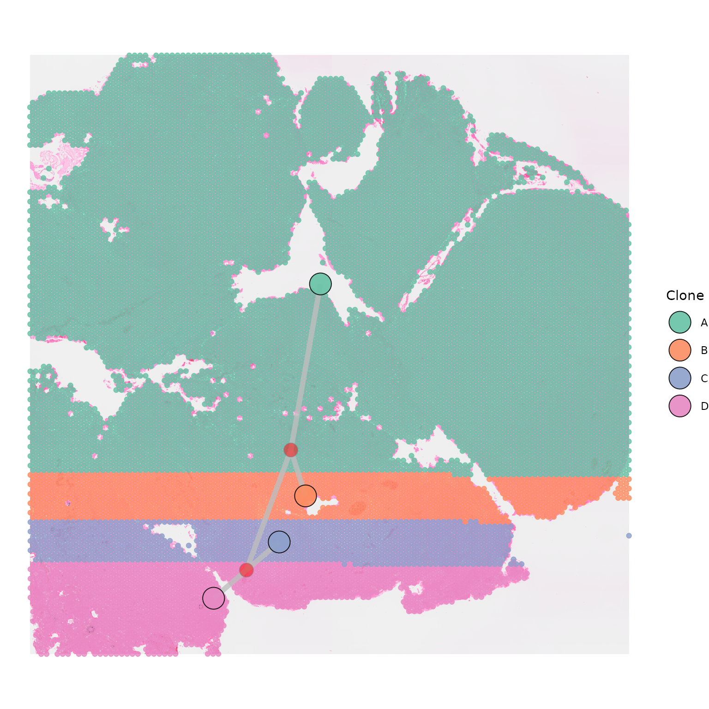
Anchoring trees
In certain situations, users may with to add an anchor point for
their phylogenetic tree to start from. To do this we need to provide the
coordinates at which we want to plot the anchor point
(origin_coord), and the name of the internal node or clone
that we want the anchor point to refer to, as is appears in the Newick
phylogenetic tree file (origin_name).
# SpatialPhyloPlot(visium_version = "V2",
# newick_file = newick_file,
# image_file = image_file,
# scale_factors = scale_factors_file,
# tissue_positions_file = tissue_positions_file,
# clone_df = clone_df,
# clone_group_column = "group",
# origin_coord = c(0,0.5),
# origin_name = )Plotting multiple samples
Plotting multiple samples is particularly useful when representing relationships between multiple samples from the same patient, such as paired primary and metastatic tumours. The first sample that is provided is always plotted in the middle, in the [0,1] coordinate system. The other sample, or samples, can be plotted to the left, right, above, or below the main sample. When plotting multiple samples we assume they share the same phylogenetic tree and Visium version but we require a separate image, scale factor, tissue position, and clone data frame.
Below we work through some of the different ways that you could plot
two samples together. When plotting multiple samples together we must
always set multisample = TRUE. Phylogenetic trees can be
plotted separately for each sample, or we can plot a single phylogenetic
tree across both samples. The most appropriate approach will depend on
the underlying data, and how the clones and tree were constructed.
Plotting multiple samples with a shared tree
To plot a single tree across the two samples, we simply need to
specify that we are running multisample = TRUE and provide
the necessary input files. This is particularly useful when copy number
has been inferred separately for different samples but the phylogenetic
tree has been built jointly.
SpatialPhyloPlot(visium_version = "V2",
newick_file = newick_file,
image_file = image_file,
scale_factors = scale_factors_file,
tissue_positions_file = tissue_positions_file,
clone_df = clone_df,
clone_group_column = "group",
multisample = TRUE,
image_file_left = image_file,
clone_df_left = clone_df,
tissue_positions_file_left = tissue_positions_file,
scale_factors_left = scale_factors_file)
Plotting multiple samples with separate trees
In other cases it may be more appropriate to plot a separate tree for
each sample, in particular if we have clones that are shared across
samples which can occur when copy number has been inferred jointly. In
this case we specify shared_clones = TRUE to indicate that
one or more of the same clone are found in both samples.
SpatialPhyloPlot will then plot the relevant portion of the
tree for each.
SpatialPhyloPlot(visium_version = "V2",
newick_file = newick_file,
image_file = image_file,
scale_factors = scale_factors_file,
tissue_positions_file = tissue_positions_file,
clone_df = clone_df,
clone_group_column = "group",
multisample = TRUE,
image_file_left = image_file,
clone_df_left = clone_df,
tissue_positions_file_left = tissue_positions_file,
scale_factors_left = scale_factors_file,
shared_clones = TRUE)
When plotting cases where only a couple of clones are shared between
the two samples, it can be useful to highlight that these are the same
by plotting dashed connections between them setting
plot_connections = TRUE. The appearance of these
connections can be adjusted by altering the
connection_width and connection_colour
parameters.
SpatialPhyloPlot(visium_version = "V2",
newick_file = newick_file,
image_file = image_file,
scale_factors = scale_factors_file,
tissue_positions_file = tissue_positions_file,
clone_df = clone_df,
clone_group_column = "group",
multisample = TRUE,
image_file_left = image_file,
clone_df_left = clone_df,
tissue_positions_file_left = tissue_positions_file,
scale_factors_left = scale_factors_file,
shared_clones = TRUE,
plot_connections = TRUE)
Adding annotations
As the outputs of SpatialPhyloPlot are
ggplot2 plots they can easily be annotated and customised
using ggplot2 functions. The [0,1] coordinate system that
each plot uses makes placing annotations simple as well. Annotating
plots can be particularly useful when highlighting areas with
interesting pathology.
SpatialPhyloPlot(visium_version = "V2",
newick_file = newick_file,
image_file = image_file,
scale_factors = scale_factors_file,
tissue_positions_file = tissue_positions_file,
clone_df = clone_df,
clone_group_column = "group")+
annotate("text", x = 0.8, y = 0.8, label = "Really interesting\narea")+
geom_rect(aes(xmin = 0.7, xmax = 0.9, ymin = 0.5, ymax = 0.75), fill = NA, colour = "black")